Adăugarea de imagini în documentul dvs. poate fi o modalitate excelentă de a ilustra informații importante și de a adăuga accente decorative textului existent.
Folosite cu moderație, imaginile pot îmbunătăți aspectul general al documentului.
Dacă aveți în vedere o anumită imagine, puteți insera o imagine dintr-un fișier.
În exemplul nostru, vom insera o imagine salvată local pe computerul nostru.
Dacă doriți să lucrați cu exemplul nostru, faceți clic dreapta pe imaginea de mai jos și salvați-o pe computer.
-
Plasați punctul de inserare acolo unde doriți să apară imaginea.
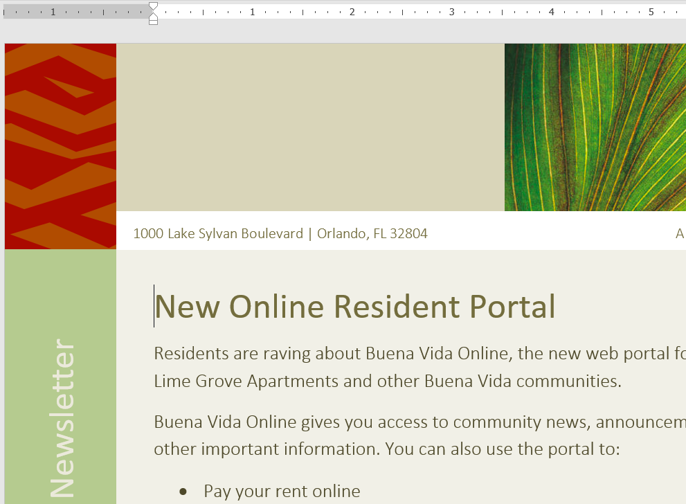
-
Selectați fila Inserare din Panglică, apoi faceți clic pe comanda Imagini.
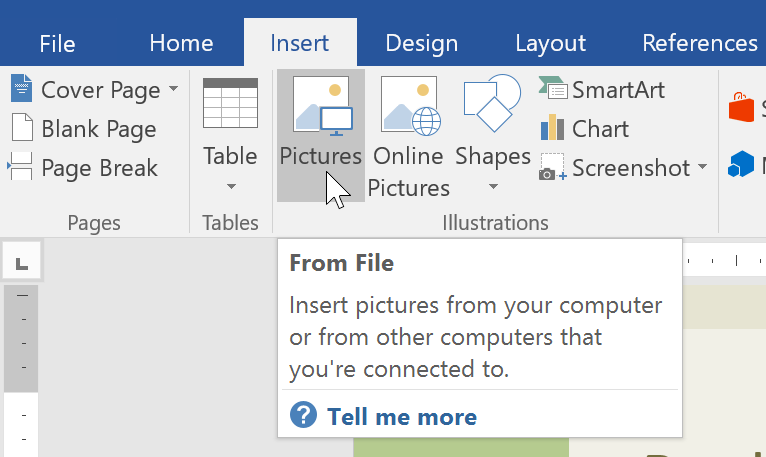
-
Va apărea caseta de dialog Inserare imagine.
Navigați la folderul în care se află imaginea dvs., apoi selectați imaginea și faceți clic pe Inserare.
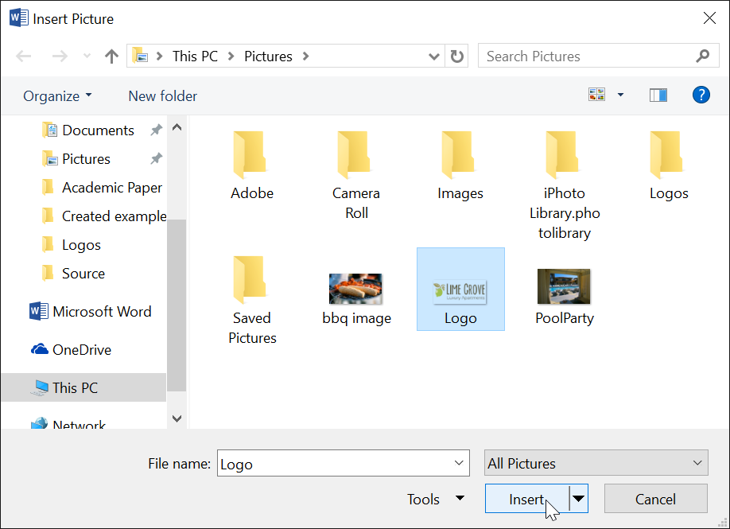
-
Imaginea va apărea în document.
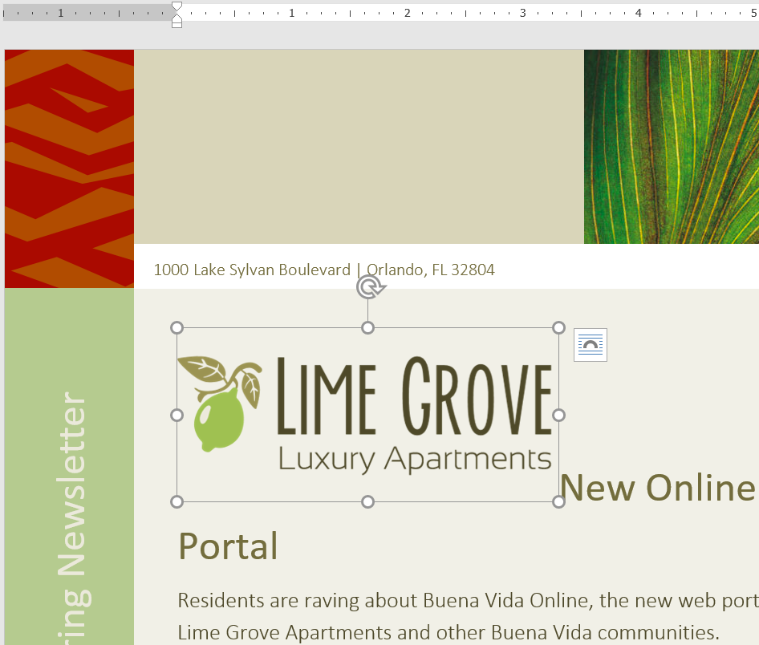
Când inserați o imagine dintr-un fișier, este posibil să observați că este dificil să o mutați exact unde doriți.
Acest lucru se datorează faptului că împachetarea textului pentru imagine este setată la În linie cu textul .
Va trebui să modificați setarea de împachetare a textului dacă doriți
să mutați imaginea liber sau dacă doriți doar ca textul să se înfășoare în jurul imaginii într-un mod mai natural.
-
Selectați imaginea în care doriți să înfășurați textul. Fila Format va apărea în partea dreaptă a Panglicii.
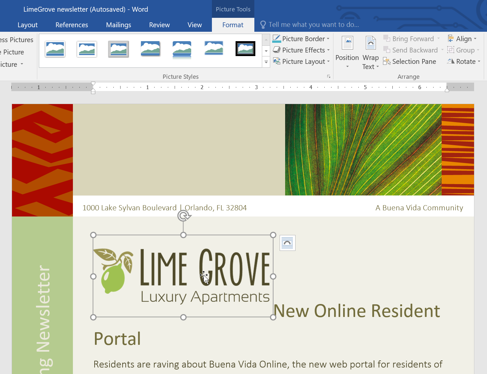
-
În fila Format , faceți clic pe comanda Încadrare text din grupul Aranjare, apoi selectați opțiunea de împachetare a textului dorită.
În exemplul nostru, vom selecta În fața textului , astfel încât să îl putem muta liber, fără a afecta textul.
De asemenea, puteți selecta Mai multe opțiuni de aspect pentru a regla aspectul.
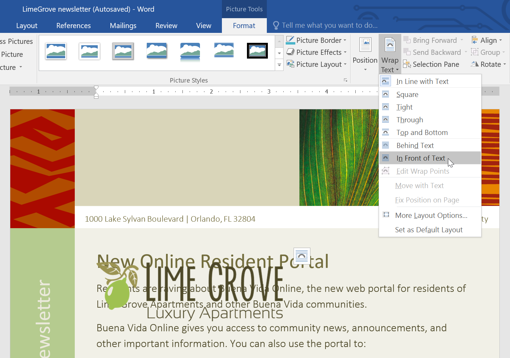
-
Textul se va înfășura în jurul imaginii. Acum puteți muta imaginea dacă doriți.
Doar faceți clic și trageți-l în locația dorită.
Pe măsură ce o mutați, vor apărea ghiduri de aliniere pentru a vă ajuta să aliniați imaginea pe pagină.
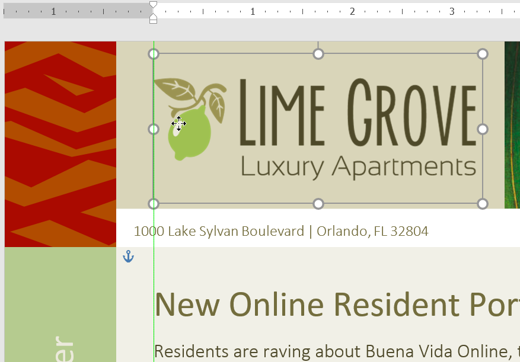
Împachetarea textului predefinită vă permite să mutați rapid imaginea într-o anumită locație de pe pagină.
Textul se va înfășura automat în jurul obiectului, astfel încât să fie încă ușor de citit.
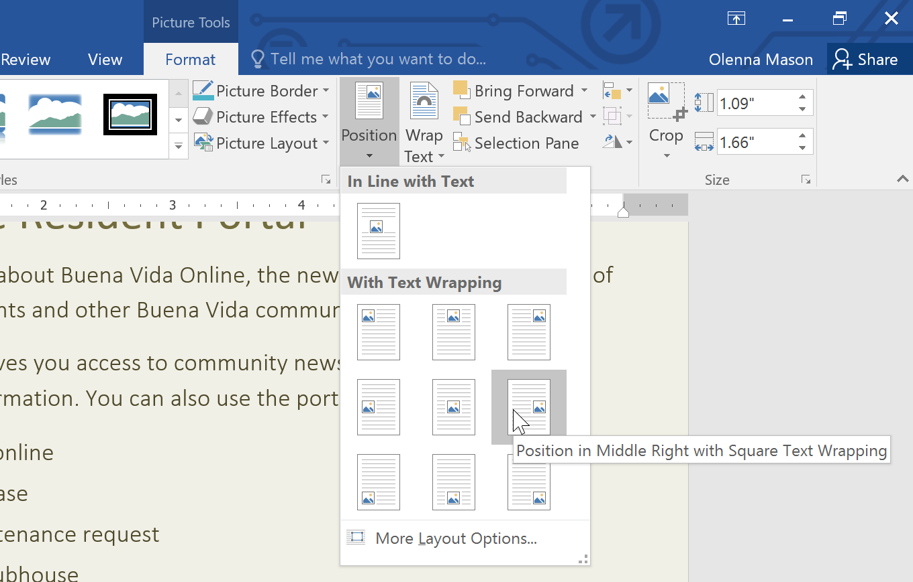
Dacă nu aveți fotografia dorită pe computer, puteți găsi o imagine online pe care să o adăugați în document.
Word oferă două opțiuni pentru a găsi imagini online:
-
Bing Image Search : Puteți utiliza această opțiune pentru a căuta imagini pe Internet.
În mod implicit, Bing arată numai imagini care sunt licențiate în baza Creative Commons,
ceea ce înseamnă că le puteți folosi pentru propriile proiecte. Cu toate acestea, ar trebui să
faceți clic pe linkul către site-ul web al imaginii pentru a vedea dacă există restricții cu privire la modul în care poate fi utilizată.
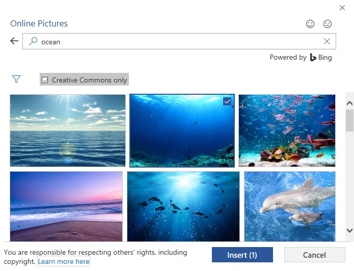
-
OneDrive : Puteți insera o imagine stocată pe OneDrive.
De asemenea, puteți conecta alte conturi online cu contul dvs. Microsoft, inclusiv Facebook și Flickr.
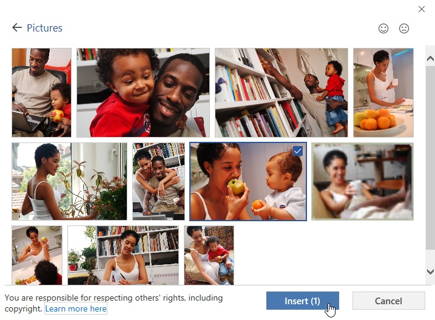
-
Plasați punctul de inserare acolo unde doriți să apară imaginea.
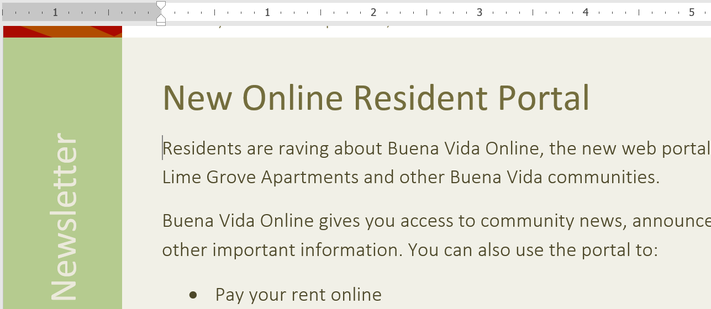
-
Selectați fila Inserare , apoi faceți clic pe comanda Imagini online.
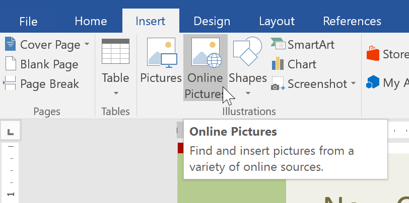
-
Va apărea caseta de dialog Inserare imagini.
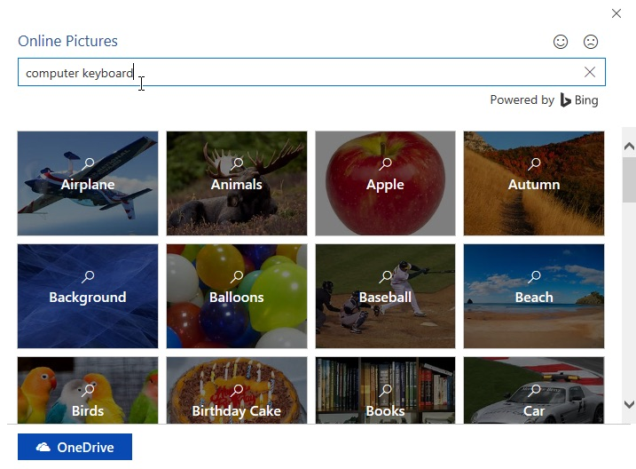
-
Apăsați tasta Enter. Rezultatele căutării dvs. vor apărea în casetă.
-
Selectați imaginea dorită, apoi faceți clic pe Inserare.
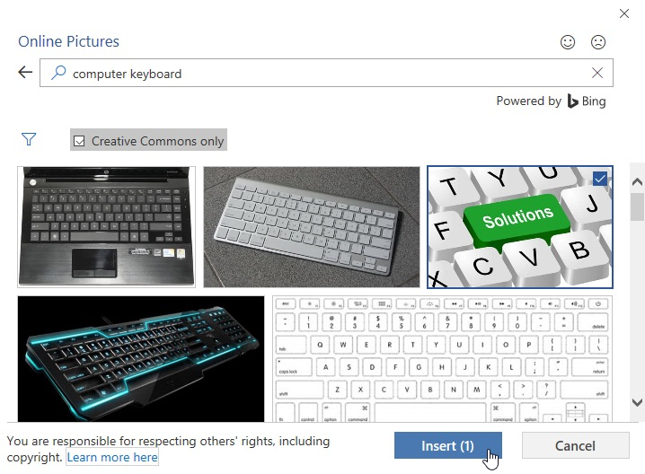
-
Imaginea va apărea în document.
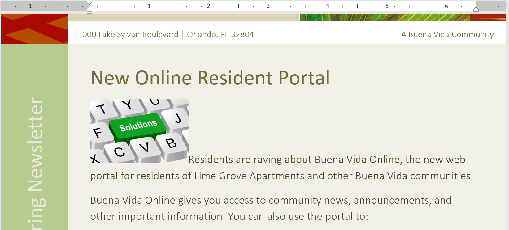